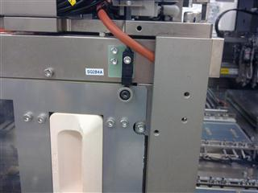
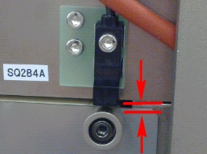

Service History
Subject: NS-8080 Chamber temperature drop during heating up at 100DegC
Handler Model: NS-8080(H52-NS88)
Controller: RC520
Date: 6 Jan 2010
Symptom
Encountered chamber temperature drop during heating up at 100DegC
Action
Check breaker for chamber heater, ok, no trip.
Found rear chamber door sensor cut off due to poor design of door sensor.
Re-adjust sensor position.
|
 |
 |
Cause
Rear chamber door sensor SQ284A(Input Bit 284) cut off during due to poor door design.
Remarks
Email by Hidaka, 25 May 2011:
To change EIN30 label of 240 Input Module 16 CH (located at Loader area)
EIN30 -> OP IN
EOUT30 ->OP OUT
To turn on Chamber fan, ON SPEL I/O Output Bit 272 & 273.
Chamber Door sensor is Input Bit 284.
Total there are 2 Chamber Door sensors(SQ284A and SQ284B) linked in series connected to EIN30 Input I/O Module(8 CH Input Unit).